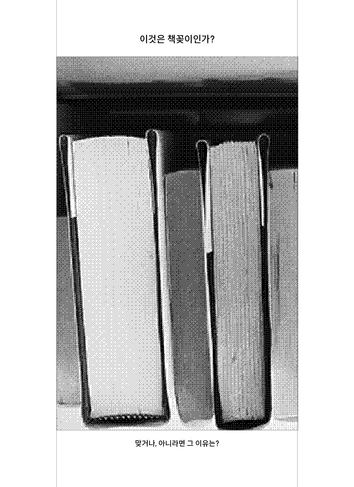

설명서 - 들어가며
시각디자인은 시각적 소통 방법을 계획하고 구현하는 다층적 활동을 뜻한다. 아이디어나 메시지를 시각적으로 표현하기 위해 문자, 기호, 그림, 사진 등을 사용한다. 시각 요소를 활용하는 방법에는 폰트 디자인, 타이포그래피, 레이아웃 체계, 색 체계, 이미지 아트 디렉팅 등이 있다. 이러한 커뮤니케이션 과정과 디자인의 최종결과물 자체를 시각디자인이라고 일컫는다. 이 강좌에서 우리는 시각디자인 프로젝트 기획에서부터 제작까지의 전과정을 훈련해 보고자 각 단계별 워크숍을 수행한다.
(1) 프로젝트 기획 (2) 프로젝트 디자인 전략 (3) 프로젝트 시안 제작 (4) 프로젝트 디자인 (5) 프로젝트 제작
<질문에 답하시오>
노먼 포터는 그의 책 『디자이너란 무엇인가』의 15장 「질문하기」에서 디자이너에게 스스로 질문하는 과정의 중요성을 강조하며 다음과 같이 말한다. 대부분의 디자인 문제는 산만하고 부정확하게, 심지어 오해와 함께 제시된다. 하지만, 문제의 본질을 파악하지 않으면 만족스러운 해결이 불가능하다. “문제”에 따라서는 그런 발견이 즉시 이루어질 수도 있고, 또 지극히 개방적인 상황에서는 디자이너 자신이 문제를 창안할 수도 있다. 어떤 경우든, “문제”라는 용어를 쓰거나 디자인을 문제 해결로 이해하는 태도는 별 도움이 못 된다. 그와는 종류가 다른 자원과 전략이 필요하다. [...] 디자이너는 자신과 타인에게 꾸준히 질문을 해야 하는데, 그중 일부는 형식을 갖춰 묻거나 적어야 할지도 모른다. 그는 또 같은 책 19장 「디자인에 질문하기」에서는 서른 일곱 개의 질문을 나열한다. 스물 아홉 번 째 질문은 다음과 같다: 당신의 작업에서 솔직함과 진실됨은 어떻게 다른가? 수강생이 평소에 궁금하던 질문을 하나 떠올린다. 노먼 포터의 서른 일곱 개 질문 가운데 하나를 선택해도 좋다. 질문에 답하는 과정을 시각디자인 프로젝트로 기획하고 15주 동안 단계별로 프로젝트를 실행한다. “당신의 작업에서 솔직함과 진실됨은 어떻게 다른가?”하는 질문에 대해 나의 포트폴리오에서 솔직한 프로젝트와 진실된 프로젝트를 나누어 분석함으로써 직설적으로 답할 수 있고 솔직함과 진실됨을 표현하는 추상적 시각물을 디자인하여 질문을 더 모호하게 만들 수도 있다. 솔직한 버튼 인터렉션과 진실된 버튼 인터렉션의 차이를 논하는 글을 쓸 수도 있으며 “솔직함”과 “진실됨” 각각을 이름으로 하는 브랜드의 패키지 디자인을 시도해볼 수도 있다.
( 최슬기 교수님, 「시각디자인 워크숍 II 강의계획서」 中)